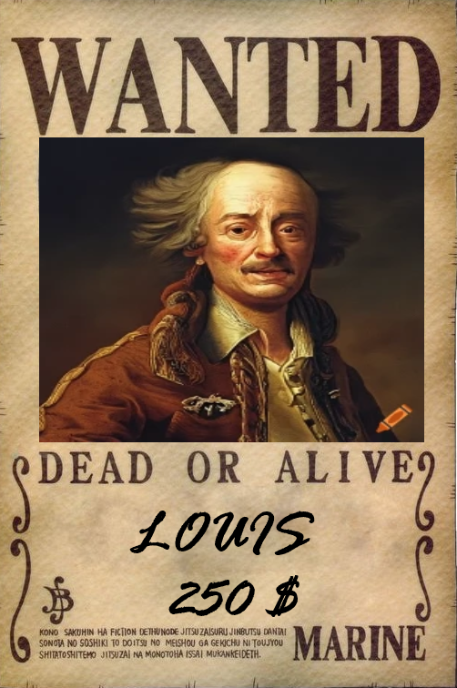
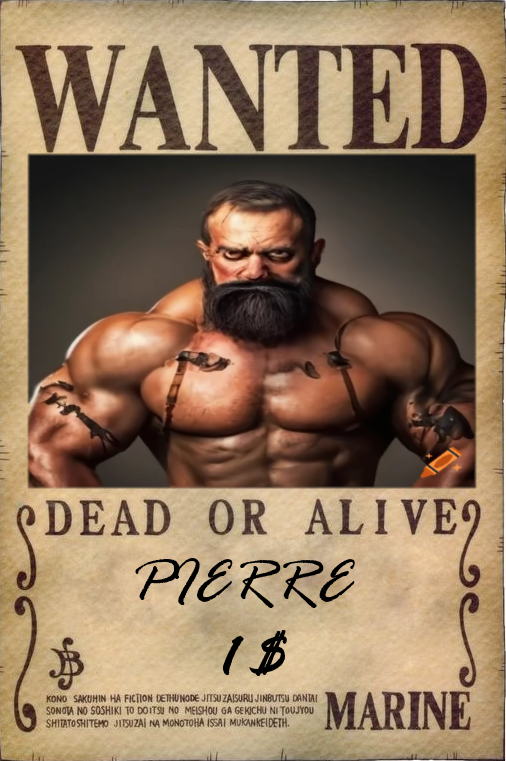

Ronan lui est l'artificier de l'équipage, son domaine est l'explosion. Son caractère est un peu semblable, il a disjoncté il y a bien des années. Néanmoins, il est redouté pour sa grande fourberie. 
Louis est un esprit posé, il n'aime pas du tout se battre. En cas de bataille, il s'éloigne et réfléchit. Une personne dotée d'une grande sagesse, c'est la tête pensante de cet équipage.

Charles est le navigateur de l'équipage. C'est un réel don chez lui, il se passionne pour les cartes du mondes et pour toujours faire des découvertes intéressantes sur les mers. Il est plutôt d'une nature timide et réserve et se fait toujours discret. 
Pierre sera pris pour un tas de muscles sans cerveau, ce qui lui fera une prime plutôt basse... Il sera expert au combat au corps à corps et même, il ne sera jamais vaincu !